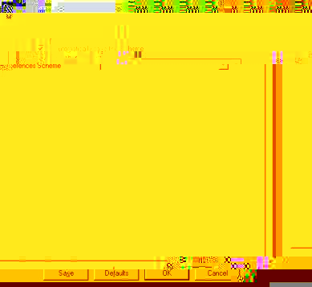

| |
|
Über AbiWord Über Open Source Index Inhalt Neuigkeiten Version prüfen Einführung Installation Erste Schritte Der Arbeitsplatz Text eingeben Formatieren Befehle editieren Paragraphen Stile Objekte einfügen Einstellungen Abkürzungen abisource.com FAQ Credits Suchen |
EinstellungenMerkmale, die modifiziert werden können, sind unter "Options..." im "tools" Menu aufgeführt. Diese sind unter anderem: Das "Option..." Fenster beinhaltet 4 Knöpfe:
Rechtschreibung:Es gibt verschiedene Optionen, die Sie ausählen können oder nicht:
Die grau unterlegten Optionen nicht noch nicht implementiert. Sie betreffen das Wörterbuch, und das Speichern und Zurücksetzen. Vorgaben-Schema:Klicken Sie "Dieses Schema automatisch speicher" an, um Ihre Einstellungen immer zu speichern. Wenn Sie z.B. das Lineal versteckt haben, dann wird es beim nächsten Starten versteckt bleiben. Das "Aktuelles Schema" Feld ermöglichst es, verschiedene Einstellungen zu verwalten. Grau unterlegte Optionen sind noch nicht implementiert.  Layout:Layout hat zwei Abschnitte, "Zeige/Verstecke..." beinhaltet Optionen, die ein- und ausgeschaltet werden können.
Das "Einheiten" Feld wählt die Einheiten für das Lineal aus. Sie können durch Anklicken des Pfeiles rechts auf ihm cm, Zoll (inch), Punkte oder pica auswählen. Die grau unterlegten Optionen nicht noch nicht implementiert. |